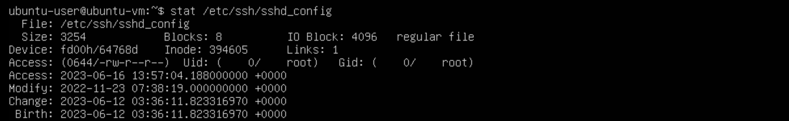
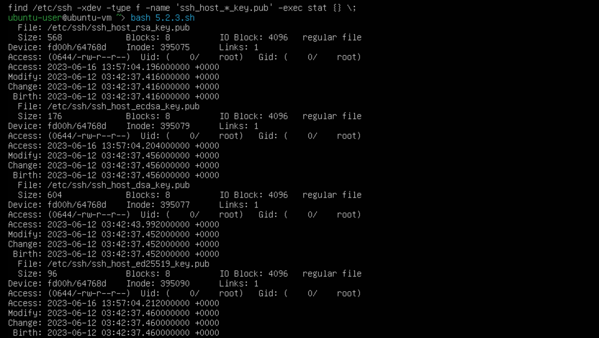
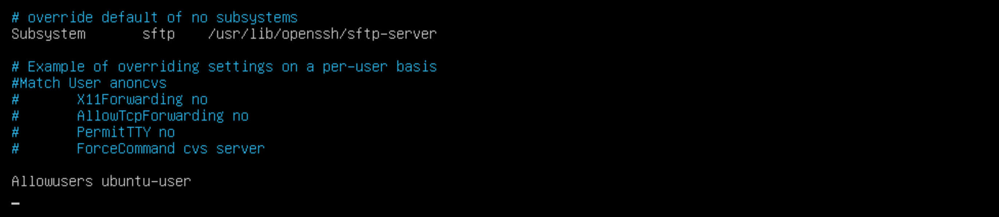
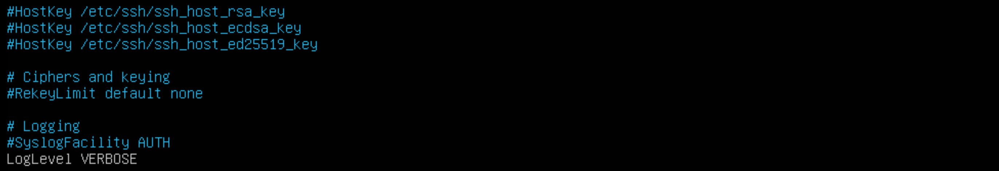
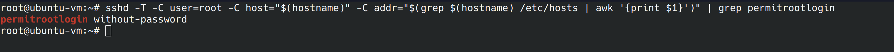

Hardening Ubuntu SSH Server with CIS Benchmarks
Configuring a secure SSH Server on Ubuntu Server 22.04 LTS, June 3rd, 2023
What are CIS Benchmarks?
CIS benchmarks are best practices for configuring computer systems and networks. The Center For Internet Security(CIS) is a nonprofit organization that makes these benchmarks available to anyone who wants them free of charge. Since I’m running an Ubuntu virtual machine, it’s a good idea to ensure that my SSH server is configured securely.
Implementing the Benchmarks
To implement the CIS controls, we are going to reference section 5.2 of the “CIS Ubuntu Linux 22.04 LTS Benchmark”, which can be obtained at https://www.cisecurity.org/. All the controls in section 5.2 and it’s subsections are tagged “automated”. This means that we can check if the configurations need to be changed using scripts provided in the benchmark.
Important Notes Before We Begin
This is my journey securing my server, I’m only going to show remediation steps when my server fails a check. If you are configuring your own server, you may have different outcomes and should reference the benchmark to remediate the problem. The scripts I’m using will be the ones provided in the benchmark. When I refer to “the config file” I’m referring to /etc/ssh/sshd_config. In the screenshots the shell and gui change as I enter commands directly into the virtual machine and sometimes remote in using SSH and different shells. I recommend using BASH and running the commands as the root user.
5.2.1
This is the first control we are going to implement. The /etc/ssh/sshd_config file contains the configuration settings for SSH. Access to this file needs to be limited to super users. If the config file is changed by unauthorized or hostile individuals, it can allow ssh connections we wouldn’t otherwise allow. We can run the below command to check the permissions of the config file:
stat /etc/ssh/sshd_config 
Looking at the first line that says access, we can see the Uid and Gid are set to root, however there are more permissions than necessary. Currently the read permissions are available to the owner(root), the group(root) and other(everyone else). We don’t want to the ssh config file available to everyone so we can change this with chmod.
sudo chmod 600 /etc/ssh/sshd_config 5.2.2
Next up we’ll ensure that the SSH host key can only be accessed by the appropriate user.
Unauthorized access will allow an attacker to impersonate the host. Page 622 of the benchmark
contains the script we need to run. To run the script we can create a file called 5.2.2.sh and
paste the script from the pdf.
An error I encountered was with the format of the script, copying and pasting directly returned
syntax errors. I’ve reformatted the script, see below:
#!/usr/bin/env bash
{
l_output=""
l_skgn="ssh_keys" # Group designated to own openSSH keys
l_skgid="$(awk -F: '($1 == "'"$l_skgn"'"){print $3}' /etc/group)"
awk '{print}' <<< "$(find /etc/ssh -xdev -type f -name 'ssh_host_*_key' -exec stat -L -c "%n %#a %U %G %g" {} +)" |
(
while read -r l_file l_mode l_owner l_group l_gid; do
[ -n "$l_skgid" ] && l_cga="$l_skgn" || l_cga="root"
[ "$l_gid" = "$l_skgid" ] && l_pmask="0137" || l_pmask="0177"
l_maxperm="$(printf '%o' $((0777 & ~$l_pmask)))"
[ $(( $l_mode & $l_pmask )) -gt 0 ] && l_output="$l_output\n - File: \"$l_file\" is mode \"$l_mode\" should be mode: \"$l_maxperm\" or more restrictive"
[ "$l_owner" != "root" ] && l_output="$l_output\n - File: \"$l_file\" is owned by: \"$l_owner\" should be owned by \"root\""
if [ "$l_group" != "root" ] && [ "$l_gid" != "$l_skgid" ]; then
l_output="$l_output\n - File: \"$l_file\" is owned by group \"$l_group\" should belong to group \"$l_cga\""
fi
done
echo "5.2.2"
if [ -z "$l_output" ]; then
echo -e "\n- Audit Result:\n *** PASS ***\n"
else
echo -e "\n- Audit Result:\n *** FAIL ***$l_output\n"
fi
)
}
Run the script by navigating to the same folder it’s stored in and run the below command
bash ./5.2.2.sh Since the test passed, no remediation is required and we can move on.
5.2.3
As we focused on private keys in the last step, we’re going to focus on the public key now. We are going to ensure that write and execute permissions aren’t available to unauthorized users, as this could allow unauthorized private keys to be authorized.
As we can see in the access lines, the group and other files are read only, this means we can move on to the next security control.
5.2.4
For this control, we want to make sure we are limiting who has SSH access by using allow or deny group or user lists. Limiting access to only users who require access, follows the principle of least privilege. The CIS benchmark provides 2 different scripts we can run to see if this policy is in place.
sshd -T -C user=root -C host="$(hostname)" -C addr="$(grep $(hostname) /etc/hosts | awk '{print $1}')" | grep -Pi '^\h*(allow|deny)(users|groups)\h+\H+(\h+.*)?$' grep -rPi '^\h*(allow|deny)(users|groups)\h+\H+(\h+.*)?$' /etc/ssh/sshd_config* If this control is in place, we should see the list when running one of these options. It turns out this isn’t active on my server, let’s fix that. We’ll use nano to edit the file. I’m going to use the allow user option.
sudo nano /etc/ssh/sshd_config 5.2.5
An important part of indecent response and digital forensics is log analysis. For the ssh logs we want to make sure we have logging enabled. The default logs are going to be “INFO” mode. Info mode is the default and will record login information. Verbose mode gives us more information, including when a user logged out and the SSH key fingerprint. We can check the mode with:
sshd -T -C user=root -C host="$(hostname)" -C addr="$(grep $(hostname) /etc/hosts | awk '{print $1}')" | grep loglevel Since my server is in “INFO” mode and I want it to be in “VERBOSE” mode, we’re going to edit the config file again.
sudo nano /etc/ssh/sshd_config We remove the #, “uncommenting” the line, then we change the “INFO”, to “VERBOSE”.
5.2.6
For this control we’re going to ensure Pluggable Authentication Module(PAM) is enabled. PAM
allows us to set up restrictions based on things like ip address, time and other factors.
We’re going to run the below command and we want to get a yes in return.
sshd -T -C user=root -C host="$(hostname)" -C addr="$(grep $(hostname) /etc/hosts | awk '{print $1}')" | grep -i usepam Since we got a yes, we want to run the next command from the benchmark and we shouldn’t see anything.
grep -Ei '^\s*UsePAM\s+no' /etc/ssh/sshd_config 
5.2.7
In this security control we are going to disallow logging in as root through SSH. If administrative actions need to be taken, the admin can escalate privileges. Having admins use their own accounts makes it easier on investigators to attribute actions to the specific admin.
sshd -T -C user=root -C host="$(hostname)" -C addr="$(grep $(hostname) /etc/hosts | awk '{print $1}')" | grep permitrootlogin 
What we wanted to see was “PermitRootLogin no”. We’re going to use nano to edit the config file again. Uncomment the “PermitRootLogin” line and replace without-password to no.
sudo nano /etc/ssh/sshd_config Now that we’ve applied the recommended remediation, let’s run both the commands the benchmark recommends again. The results may appear similar, but if you look closely, one output will contain uppercase letters while the other will not. Two 2 commands are going to check that root login isn’t permitted in two different locations.